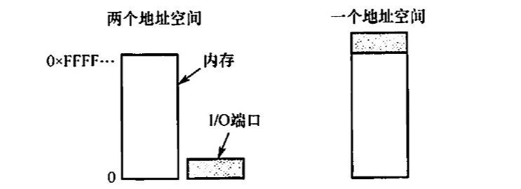

2022.09.18
分类
块设备：交换单位为数据块。有结构类型。比如磁盘。
低速设备、中速设备、高速设备
IO接口
又名设备控制器，位于CPU与设备中间，负责与CPU和设备通信
IO逻辑
IO端口：指的是设备控制器中可以被CPU直接访问的寄存器
三类寄存器（数据寄存器、状态寄存器、控制寄存器）
独立编址、统一编址

【答案】：A -> B。可寻址是块设备的基本特征，A 选项不正确；共享设备是指一段时间内允许多个进程同时访 问的设备，因此C选项不正确。分配共享设备是不会引起进程死锁的，D选项不正确
【答案】：A -> C。虛拟设备是指采用虚拟技术将一台独占设备转换为若干逻辑设备。引入虛拟设备是为了克服 独占设备速度慢、利用率低的特点。这种设备并不是物理地变成共享设备，一般的独享设备也不能转化为共享设备。只是用户使用时感觉像是共享设备。
【答案】：D
【答案】：A
【答案】：D -> C。接口用来传信号。
【答案】：D
【答案】：A
【答案】：A
【答案】：A
若IO设备与存储设备进行数据交换不经过CPU 来完成，則这种数据交换方式是（）. A．程序查询 B. 中断方式 C. DMA 方式 D.无条件存取方式
【答案】：C
计算机系统中，不属于 DMA 控制器的是（） A． 命令/状态寄存器 B. 内存地址寄存器 C.数据守存器 D.堆栈指针守存器
【答案】：D
（）用作连接大量的低速或中速IO设备 A.数据选择通道 B.宇节多路通道 C．数据多路通道 D. IO处理机
【答案】：D -> B，字节多路通道，它通常含有许多非分配型子通道，其数量可达几十到几百个，每个通道连接 一台设备，并控制该设备的 IO 探作。这些子通道按时间片轮转方式共享主通道。各个通道循环使用主通道，各个通道每次完成其 IO 设备的一个字节的交换，然后让出主通道的使用权。这样，只要字节多路通道扫描每个子通道的速率足够快，而连接到子通道上的设备的速率不太高时，便不至于丢失信息。
在下列问题中，（）不是设备分配中应考虑的问题。 A.及时性 B.设备的固有属性 C.设备独立性 D.安全性
【答案】：B -> A。设备的盾有属性决定了设备的使用方式；设备独立性可以提高设备分配的灵活性和设备的利 用率；设备安全性可以保证分配设备时不会导致永久阻塞。设备分配时一般不需要考虑及时性。
将系统中的每台设备按某种原则统一进行编号，这些编号作为区分硬件和识别设备的代号，该编号称为设备的（）。 A.绝对号 B.相对号 C.类型号 D.符号
【答案】：D -> A
关于通道、设备控制器和设备之问的关系，以下叙述中正确的是(） A． 设备控制器和通道可以分别控制设备 B. 对于同一组揄入/输出命令，设备控制器、通道和设备可以并行工作 C.通道控制设备控制器、设备控制器控制设备工作 D以上答案都不对
【答案】：D -> C
有关设备管理的叙述中，不正确的是（）。 A. 通道是处理揄入/输出的软件 B. 所有设备的启动工作都由系统统一来做 C. 来自通道的IO 中断事件由设备管理负责处理 D. 编制好的通道程序是存放在主存中的
【答案】：A
IO中断是CPU与通道协调工作的一种手段，所以在（）时，便要产生中断。 A.CPU 执行“启动 IO” 指令而被通道拒绝接收 B.通道接收了 CPU 的启动请求 C.通道完成了通道程序的执行 D.通道在执行通道程序的过程中
【答案】：C
一个计算机系统配置了2台绘图机和3台打印机，为了正确驱动这些设备，系统应该提供(）个设备驱动程序。 A.5 B.3 C.2 D. 1
【答案】：C
将系统调用参数翻译成设各操作命令的工作由（）完成 A． 用户层IO B. 设备无关的操作系统软件 C.中断处理 D.设备驱动程序
【答案】：D -> B
一个典型的文本打印页面有50行，每行80个字符，假定一台标准的打印机每分钟能打印6页，向打印机的输出奇存器中写一个字符的时问很短，可忽略不计。若每打印一个宇符都需要花费 50us 的中断处理时问（包括所有服务），使用中断驱动I/0 方式运行这台打印机，中断的系统开销占 CPU 的百分比为（). A. 2% B. 5% C. 20% D. 50%
【答案】：A
【2010统考典题】本地用户通过键盘登录系统时，首先获得键盘揄入信息的程序是(）。 A命令解释程序 B. 中断处理程序 C.系统调用服务程序 D．用户登录程序
【答案】：A -> B
【2011 统考真题】用户程序发出磁盘UO 请求后，系统的正确处理流程是（）。 A．用户程序一系统调用处理程序一中断处理程序一设备驱动程序 B.用户程序一系统调用处理程序一设备驱动程序一中断处理程序 C．用户程序一设备驱动程序一系统调用处理程序一中断处理程序 D.用户程序一设备驱动程序一中断处理程序一系统调用处理程序
【答案】：A -> B
【2012 統考真题】操作系统的 IO 子系统通常由4 个层次组成，每层明确定义了与邻近层次的接口，其合理的层次組织排列顺序是（）。
A． 用户级VO软件、设备无关软件、设备驱动程序、中断处理程序 B. 用户级VO软件、设备无关软件、中断处理程序、设备驱动程序 C. 用户级IO软件、设备驱动程序、设备无关软件、中断处理程序 D.用户级IO软件、中断处理程序、设备无关软件、设备驱动程序
【答案】：A
【2013 统考真题】用户程序发出磁盘 VO 请求后，系统的处理流程是：用户程序一系统调用处理程序一设备驱动程序一中断处理程序。其中，计算数据所在磁盘的柱面号、磁头号、扇区号的程序是（）. A.用户程序 B.系统调用处理程序 C.设备驱动程序 D.中断处理程序
【答案】：C
【2017 统考真题】系统将数据从磁盘读到内存的过程包括以下操作： ① DMA 控制器发出中断请求 ② 初始化 DMA 控制器并启动磁盘 ③ 从磁盘传输一块数据到内存缓冲区 ④执行 “DMA 结束” 中断服务程序 正确的执行顺序是（）。 A 3124 B 2314 C 2134 D 1243
【答案】：C -> B